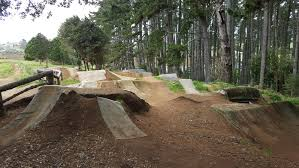

South Auckland
1. South auckland is home to a good variety of trails, however some are quite far away.

Puni Park
Source: Franklin MTB club facebook page.
Ambury Park
Source:
Wikimedia Commons
Hunua Ranges
Source: Robin Capper -
flickr.
Puni Park, this is a super fun trail network located down by Pukekohe with lots of jumps and a pumptrack.
Ambury Park has a good selection of loops, however there are no super challenging trails.
Hunua Ranges, Hunua is a super fun place to ride but dont go
here when its muddy as it is in dense bush.
return to homepage.
Background Image Via: unsplash - public domain - author unkown.